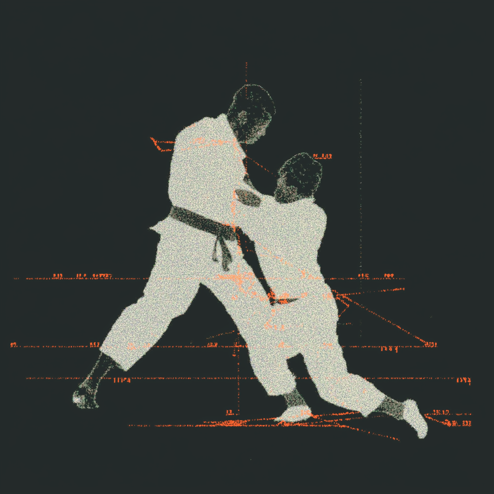

I build a life of inquiry across body, mind, and world. On the mat, under a sky full of signal, at the whiteboard, and in the studio, I iterate. My work blends rigor and intuition: test, observe, refine. Minimal surfaces, bold edges, clear structure—then a single detail that turns the image.
Interests
Meditation
Awareness as Craft

Brazilian Jiu‑Jitsu
Dialogue in Movement
Photography
The Art of Noticing
Values
Innocence — a Beginner’s Mindset
Curiosity is my compass. I approach every project as if it were my first, free of bias, full of wonder, and open to possibility. This innocence fuels experimentation and keeps my work fresh, inviting a sense of discovery.
Integrity — doing the right thing when no one’s watching
My actions align with my words, and my decisions reflect my deepest beliefs, even when it's difficult or unpopular. I take ownership of my mistakes, honor my commitments, and speak truthfully with kindness. Integrity is my compass—it guides me when the path isn't clear and keeps me grounded in who I want to be.
Care — design with empathy, craft with love
Great experiences start with listening. As someone great said, “Amongst real people there are no hierarchies.” I cater to needs, contexts, and emotions, then build thoughtfully, prioritizing inclusivity and sustainability. Every small detail is a quiet act of care.
Resilience — iterate, adapt, grow
I've learned that resilience isn't about avoiding difficulty, but about developing the inner strength to navigate it with grace. I find ways to grow from setbacks, to maintain hope during uncertain times, and to support others facing their own struggles. Progress isn’t a straight line—it’s a resilient loop of learning.